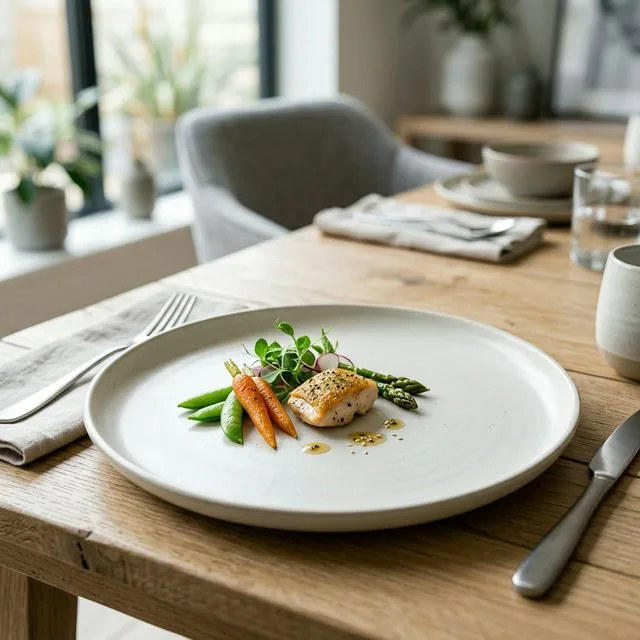
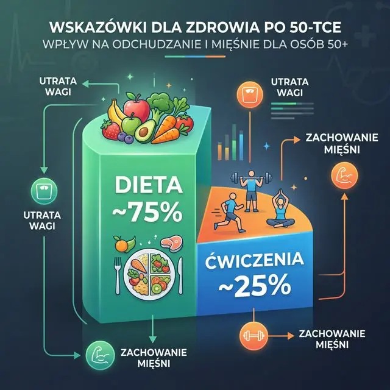
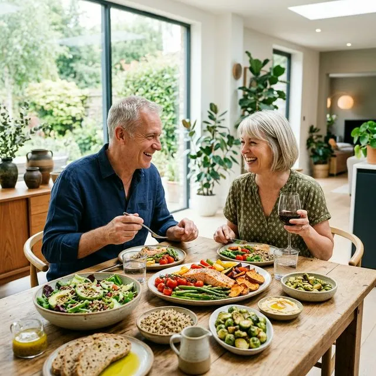
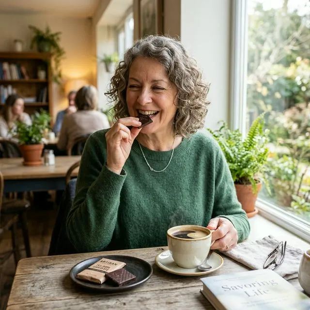

Większość osób po pięćdziesiątce, które zaczynają ćwiczyć, popełnia ten sam błąd: ogranicza jedzenie, żeby szybciej schudnąć. Wyniki są złe. Ciało słabnie zamiast silnieć. Zmęczenie rośnie. I po trzech tygodniach przychodzi myśl: to nie jest dla mnie. A przyczyną nie był trening — była dieta.
Kluczowe wnioski
- Najważniejsze: Większość osób po pięćdziesiątce, które zaczynają ćwiczyć, popełnia ten sam błąd: ogranicza jedzenie, żeby szybciej schudnąć.
- W artykule znajdziesz konkrety o: Dieta czy ćwiczenia — co daje więcej efektów?.
- Drugi kluczowy temat: Proporcja — ile robi dieta, ile ćwiczenia?.
Dieta czy ćwiczenia — co daje więcej efektów?
To pytanie zadało sobie wielu naukowców. Odpowiedź jest zaskakująca, ale jednocześnie bardzo praktyczna.
Analiza danych uczestników programu ekstremalnej utraty wagi wykazała, że dieta sama w sobie dawała większy efekt utraty masy ciała niż same ćwiczenia. Sama dieta = 34 kg utraty wagi w 30 tygodni z 65% z tkanki tłuszczowej. Same ćwiczenia bez diety = 2,7 kg, ale w 100% z tkanki tłuszczowej, bez straty mięśni. Kluczowy wniosek: dieta skraca wagę, ale trening decyduje o tym z czego ta waga pochodzi.
Źródło: Hall KD. (2013). Diet versus Exercise in the Biggest Loser Weight Loss Competition. Obesity, 21(5), 957–959. doi: 10.1002/oby.20065. PMC3660472.To jedno z najważniejszych zdań w żywieniu i sporcie: przy odchudzaniu dieta zwykle odgrywa większą rolę niż sam ruch. Ale jeśli schudniesz tylko dietą bez ćwiczeń — 25–35% tej straty to mięśnie, nie tłuszcz. Czyli pozbywasz się czegoś, czego nie chciałeś się pozbyć.
Badania pokazują, że dieta bez ćwiczeń prowadzi do straty masy mięśniowej na poziomie ok. 25% całkowitej utraty wagi. Połączenie diety z treningiem siłowym redukuje tę stratę nawet o 50%. U kobiet w wieku 40–60 lat ćwiczących z dietą nie odnotowano utraty mięśni (LBM), podczas gdy grupa dietująca bez ćwiczeń straciła znaczącą masę mięśniową przy porównywalnym spadku wagi.
Źródło: PMC7325539 — A comparison of diet versus diet + exercise programs for health improvement in middle-aged overweight women. / Frontiers in Nutrition 2025. doi: 10.3389/fnut.2025.1579024
Dieta odchudza. Trening decyduje co zostaje. Po 50-tce traci się naturalnie mięśnie — dieta bez treningu ten proces przyspiesza. Trening z odpowiednią dietą go odwraca.
Proporcja — ile robi dieta, ile ćwiczenia?
Zespół naukowców z USA i Europy przeanalizował dziesiątki badań i wyłonił następującą tabelę proporcji efektów:
| Cel | Dieta (%) | Ćwiczenia (%) | Oba razem |
|---|---|---|---|
| Utrata masy ciała | ~75% | ~25% | Optymalnie |
| Zachowanie mięśni | Kluczowe | Kluczowe | Niezbędne |
| Spadek tłuszczu | Duży efekt | Mniejszy efekt | Najlepszy efekt |
| Metabolizm spoczynkowy | Pomaga ograniczyć spadek | "Naprawia" metabolizm | Najlepiej |
| Zdrowie serca | Dobry efekt | Bardzo dobry | Synergiczny |

Dlaczego NIEDOJADANIE jest problemem — szczególnie po 50-tce
Większość ludzi, kiedy słyszy „jedz lepiej”, słyszy „jedz mniej”. To błąd. Po pięćdziesiątce jednym z głównych problemów jest to, że większość osób dostarcza za mało białka, za mało kalorii na pokrycie potrzeb trenującego organizmu, i za mało składników odżywiających mięśnie.
Co się dzieje kiedy jesz za mało i ćwiczysz?
Wyobraź sobie, że Twoje ciało to firma. Masz kontrakt na budowę domu (mięśnie), ale cedzisz budżet do zera, bo chcesz zaoszczędzić. Firma nie buduje domu — bierze materiały z innych budynków (ściąga mięśnie jako paliwo). Efekt: ani domu nie ma, ani innych budynków nie przybyło.
Kiedy jesz zbyt mało białka i kalorii, a jednocześnie trenujesz — ciało wchodzi w stan kataboliczny, czyli rozkłada mięśnie. Trójkąt: mało jeść + dużo ćwiczyć + spadek płynności — brzmi pięknie, a jest biologiczną pułapką.
Utrata masy ciała osiągana przez samą restrykcję kalorii prowadzi do ubytku beztłuszczowej masy ciała (mięśnie, kości) w granicach 25–35% całkowitej straty wagi. U osób z prawidłową wagą strata mięśni może przekraczać 35% ogółu. Trening oporowy przy ograniczeniu kalorycznym zmniejsza tę stratę nawet o 50%.
Źródło: Cava E. et al. (2017). Preserving Healthy Muscle during Weight Loss. ScienceDirect / Advances in Nutrition, 8(3), 511–519. PMC5308821.Ile białka naprawdę potrzebujesz po 50-tce?
Oto konkretne liczby, oparte na aktualnych wytycznych europejskich i amerykańskich:
Rekomendacja dla osób po 50-tce ćwiczących siłowo
1,5–2,0 g białka na kg masy ciała dziennie. Dla osoby ważącej 75 kg = 112–150 g białka na dobę. Przeciętna Polka i przeciętny Polak dostarczają zaledwie 0,7–0,9 g/kg. To prawie dwa razy za mało.
Europejskie Towarzystwo Geriatrii Klinicznej i Żywienia (ESPEN) rekomenduje spożycie białka na poziomie minimum 1,0–1,2 g/kg masy ciała dziennie dla zdrowych starszych dorosłych, a dla osób aktywnych fizycznie — 1,5–2,0 g/kg. Badanie na kobietach w wieku 50–70 lat wykazało, że spożycie 1,2 g/kg z rozkładem minimum 30 g białka na posiłek istotnie poprawiało skład ciała i funkcję fizyczną.
Źródło: ESPEN Guideline 2019 / Cava E. et al., Advances in Nutrition / Bauer J. et al. Evidence-based recommendations for optimal dietary protein intake in older people. JAMDA 2013.Skąd wziąć białko — konkrety
Nie musisz pić odżywek. Możesz — ale nie musisz. Oto co daje białko w zwykłym jedzeniu:
| Produkt | Porcja | Białko (g) |
|---|---|---|
| Pierś z kurczaka (pieczona) | 150 g | ~42 g białka |
| Twaróg półtłusty | 200 g | ~36 g białka |
| Jajka | 3 sztuki | ~19 g białka |
| Łosoś (pieczony) | 150 g | ~30 g białka |
| Grecki jogurt (0%) | 200 g | ~20 g białka |
| Ciecierzyca (gotowana) | 200 g | ~17 g białka |
| Tofu twarde | 150 g | ~18 g białka |
| Odżywka białkowa (1 porcja) | 1 miarka (~30 g) | ~24 g białka |
Dieta na chwilę czy zmiana totalna? To jest właściwe pytanie
Większość osób myśli o diecie jako o projekcie z terminem. Tysiąc kalorii dziennie przez dwa miesiące, potem — wracamy do normalnego. To jest właśnie powód, dlaczego prawie każda dieta kończy się efektem jo-jo.
Efekt jo-jo jest biologicznie wyjaśniony. Po powrocie do starego sposobu jedzenia organizm, który stracił mięśnie podczas diety, ma niższy metabolizm bazowy. Każda ta sama ilość kalorii daje teraz więcej tłuszczu niż przed dietą. Badania pokazują, że cykl odchudzanie-tycie stopniowo pogarsza skład ciała przy każdym cyklu.
Źródło: Frontiers in Nutrition 2025, Systematic Review. doi: 10.3389/fnut.2025.1579024. / Cava et al. Preserving Healthy Muscle during Weight Loss.Zamiast diety na chwilę — drobne, trwałe zmiany nawyków. Nie trzeba wyrzucać z życia czekolady, chleba ani wina. Trzeba zmienić proporcje i częstotliwość. To jest dietą na całe życie — i nie jest dietą, bo staje się normalnym jedzeniem.
Najlepsza dieta to ta, której będziesz się trzymać przez pięć lat. Jeśli nie widzisz siebie na tej diecie za pięć lat — nie zaczynaj.
— Na podstawie: Mozaffarian D. (2016). Dietary and Policy Priorities for CVD. Circulation, AHA Journals.Jak sobie radzić z łaknieniem — bez walki z sobą
Łaknienie po 50-tce ma trzy główne biologiczne przyczyny. Kiedy je rozumiesz, przestań być wrogiem — staje się informacją.
Przyczyna 1: Glukoza skacze i spada
Jesz błyskawiczne węglowodany (białe pieczywo, słodycze, soki) — glukoza we krwi gwałtownie rośnie, wydzielana jest duża porcja insuliny, glukoza spada poniżej normy — i pojawia się wilczy głód.
Rozwiązanie: jedz białko i tłuszcze razem z węglowodanami. Zwalniają wchłanianie glukozy, stabilizują poziom cukru, łaknienie mija.
Przyczyna 2: Brak białka w posiłku
Białko najsilniej ze wszystkich makroskładników hamuje apetyt. Powoduje wydzielanie GLP-1 i PYY — hormonów sytości. Posiłek z dużą ilością białka daje uczucie sytości na 3–4 godziny. Posiłek bez białka — na godzinę.
Diety wysokobiałkowe (>25% kalorii z białka) znacząco zmniejszają uczucie głodu i spontaniczne spożycie kalorii — bez konieczności liczenia kalorii. Efekt jest mierzalny: badani jedzący więcej białka spontanicznie spożywali 441 kalorii mniej dziennie w porównaniu z grupą niskobiałkową.
Źródło: Weigle DS et al. (2005). American Journal of Clinical Nutrition, 82(1), 41–48.Przyczyna 3: Niedostateczne nawodnienie
Mózg myli pragnienie z głodem. To nie mit — to fakt neurologiczny. Centrum pragnienia i centrum głodu są anatomicznie blisko siebie w podwzgórzu i sygnały mogą się mieszać. Szklanka wody przed posiłkiem — i często okazuje się, że jedzenia potrzebujesz mniej.
Trzy praktyczne sposoby na łaknienie
- Zjedz 20–30 g białka przy każdym posiłku — będziesz syty dłużej.
- Szklanka wody 15 minut przed jedzeniem — zmniejsza porcje o średnio 13%.
- Nie jedz przy ekranie — uważność podczas jedzenia zwiększa poczucie sytości przy tej samej ilości jedzenia.
Obalamy mity — jeden po drugim
| MIT | FAKT |
|---|---|
| Po 50-tce trzeba jeść mało, żeby nie tyć. | Problemem bywa zarówno jakość jedzenia, jak i jego ilość. Niedobory białka przyspieszają utratę mięśni, które obniżają metabolizm. Jedz więcej białka, ćwicz — i łatwiej będzie lepiej regulować wagę. |
| Jeść mniej i ćwiczyć — to na pewno załatwi sprawę. | Jeśli jesz za mało białka i ćwiczysz — tracisz mięśnie. Ciało "je" je jako paliwo. Wynik: spadek wagi, ale słabsze ciało i niższy metabolizm. |
| Odżywki białkowe są dla kulturystów. | Odżywka białkowa to po prostu skoncentrowane białko z mleka lub roślin. Nie różni się od kurczaka. Przydaje się, gdy ciężko dostarczyć wystarczająco białka z jedzenia. |
| Tłuszcze w jedzeniu powodują tycie. | Białe pieczywo i cukry powodują tycie. Zdrowe tłuszcze (awokado, orzechy, oliwa, ryby) — dają sytość i są niezbędne dla hormonów po 50-tce. |
| Jak zgłodnieję — to słaba silna wola. | Łaknienie to sygnał biologiczny, nie charakter. Grelina (hormon głodu) rośnie przy niedoborze kalorii i białka. Odpowiednie jedzenie redukuje grelinę — silna wola nie jest potrzebna. |

Praktyczny tygodniowy schemat — bez liczenia kalorii
Nie musisz liczyć kalorii. Musisz dbać o proporcje. Oto prosta zasada talerza:
Zasada talerza dla osób po 50-tce ćwiczących
- 1/2 talerza: warzywa i sałaty (błonnik, witaminy, sytość).
- 1/4 talerza: białko (mięso, ryby, jajka, rośliny strączkowe).
- 1/4 talerza: złożone węglowodany (kasza, ryż pełnoziarnisty, ziemniaki, makaron razowy).
- Do tego: łyżka oliwy lub garść orzechów jako zdrowy tłuszcz.
I jedno dodatkowe życzenie — które nie jest o jedzeniu, ale o psychologii: nie rób sobie zakazów. Zamiast „nie mogę jeść czekolady” — „jem czekoladę w małych ilościach i z przyjemnością”. Zakaz kreuje obsesję. Zgoda na miarę kreuje kontrolę.

Najlepsza dieta to ta, której będziesz się trzymać przez pięć lat. Jeśli nie widzisz siebie na tej diecie za pięć lat — nie zaczynaj.
— Na podstawie: Mozaffarian D. (2016). Dietary and Policy Priorities for CVD. Circulation, AHA Journals.Jedz więcej — właściwych rzeczy. Białko, warzywa, zdrowe tłuszcze, woda. Mniej przetworzonej żywności — ale nie jako zakaz, jako stopniowy wybór. I ćwicz. Bo razem te dwie rzeczy dają to, czego żadna nie daje osobno: silne ciało, które żyje lepiej i dłużej.
Jeśli chcesz to wdrożyć krok po kroku, połącz ten tekst z przewodnikiem Dieta po 50-tce kontra nawyki oraz z materiałem o ukrytym cukrze w „zdrowych” produktach.
W praktyce treningowej przydadzą Ci się też zasady z artykułu o nawodnieniu na siłowni po 50-tce i konkretne rekomendacje z tekstu Białko i kreatyna po 50-tce.
Źródła
| [1] | Hall KD. (2013). Diet versus Exercise in the Biggest Loser Weight Loss Competition. Obesity, 21(5), 957–959. doi: 10.1002/oby.20065. PMC3660472. |
| [2] | Cava E., Yeat NC., Mittendorfer B. (2017). Preserving Healthy Muscle during Weight Loss. Advances in Nutrition, 8(3), 511–519. doi: 10.3945/an.116.014506. |
| [3] | PMC7325539. A comparison of diet versus diet + exercise programs for health improvement in middle-aged overweight women. doi: 10.3389/fnut.2025.1579024. |
| [4] | Frontiers in Nutrition 2025. Comparing exercise modalities during caloric restriction: systematic review and network meta-analysis. doi: 10.3389/fnut.2025.1579024. |
| [5] | ESPEN Expert Group Recommendations for Action Against Sarcopenia. (2019). Clinical Nutrition, 38(4), 1499–1524. doi: 10.1016/j.clnu.2019.06.004 |
| [6] | Bauer J. et al. (2013). Evidence-Based Recommendations for Optimal Dietary Protein Intake in Older People. JAMDA, 14(8), 542–559. |
| [7] | Weigle DS et al. (2005). American Journal of Clinical Nutrition, 82(1), 41–48. |
| [8] | Mozaffarian D. (2016). Dietary and Policy Priorities for Cardiovascular Disease, Diabetes, and Obesity. Circulation, 133(2), 187–225. |
| [9] | PMC8308821. Weight Loss Strategies and the Risk of Skeletal Muscle Mass Loss. Nutrients / Advances in Nutrition 2021. |
| [10] | Pollan M. (2008). In Defense of Food: An Eater's Manifesto. Penguin Press. |
FAQ
Dlaczego po 50 warto jeść więcej białka?
Po 50 organizm słabiej wykorzystuje bodziec anaboliczny, więc odpowiednia podaż białka pomaga utrzymać mięśnie i sprawność. To ważne przy treningu i w profilaktyce sarkopenii.
Ile białka na posiłek po 50 będzie rozsądne?
Często dobrze działa około 25-40 g białka na główny posiłek, zależnie od masy ciała i aktywności. Dzięki temu łatwiej utrzymać sytość i regenerację.
Jak zwiększyć białko w diecie bez suplementów?
Najprościej dołożyć do posiłków jajka, nabiał wysokobiałkowy, ryby, chude mięso, tofu lub strączki. Warto rozkładać białko równomiernie w ciągu dnia.